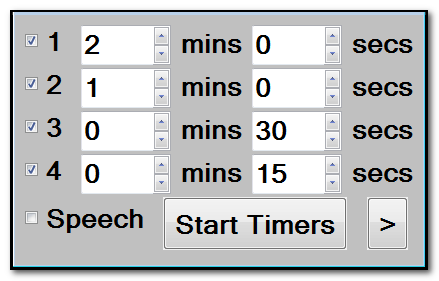
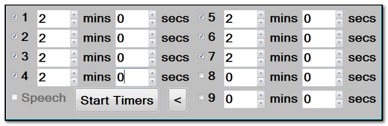

Interval Timer
(Shortcut WindowsKey and I)
(ALTERNATIVE SHORTCUT = ScrollLock and I)
Often used with structures like "Buzz and Go" - the Interval Timer allows you to set up to 4 countdown timers to run consecutively:

If you would like the computer to inform students that they need to change tasks after each countdown, tick the "Speech" box and ensure you have a "Text to Speech" engine installed on your computer.
Note:
The interval timer remembers where you placed it, and reappears in this place.
To reset the position of the interval timer, either use the shortcut key (WindowsKey and I) or RELOAD the toolkit.
To launch the interval timer using the shortcut key, without resetting the position, hold down the CTRL key, as your press WindowsKey and I.
Top tip:
Should you require more timers, clicking on the fly-out icon > will provide up to 9 timers.
